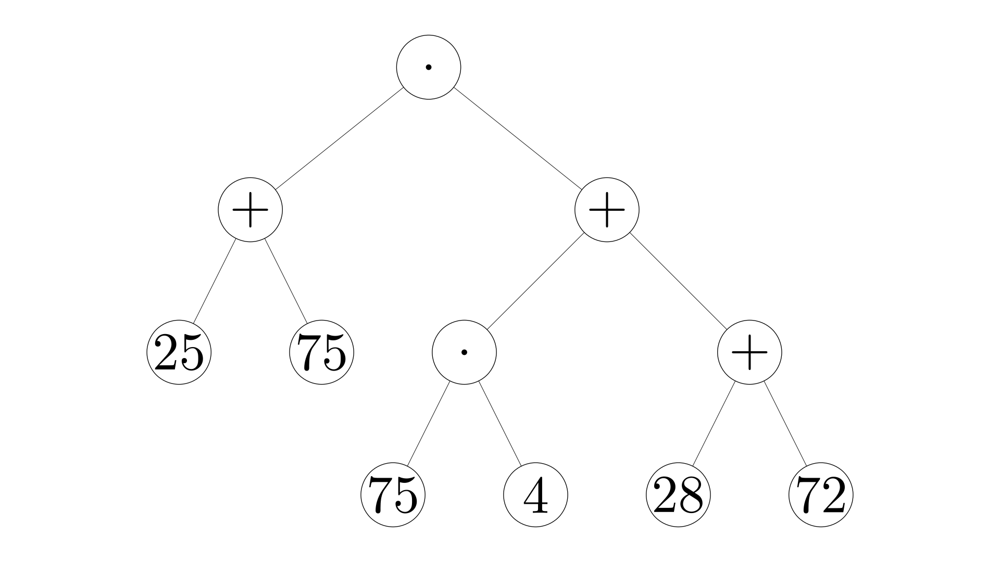
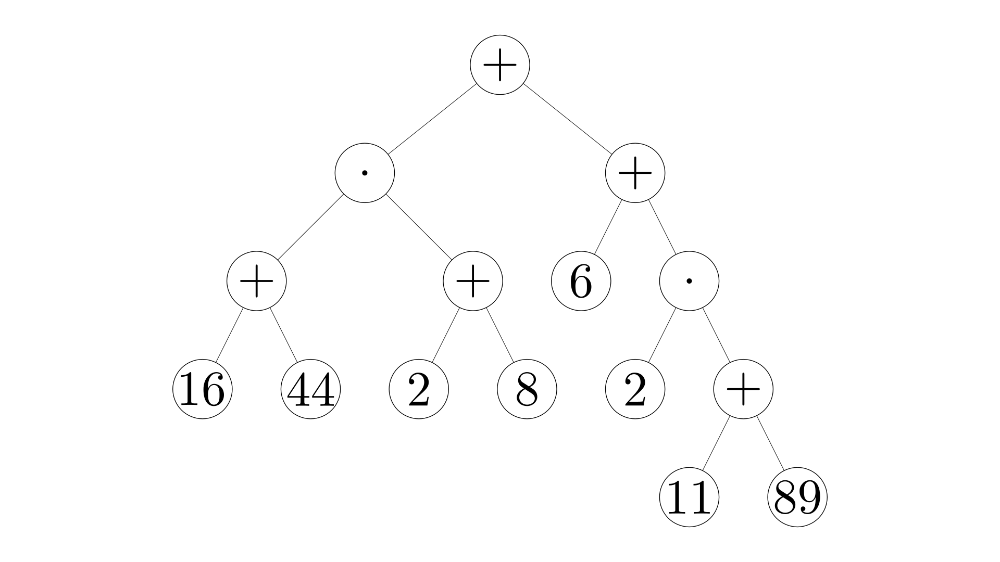
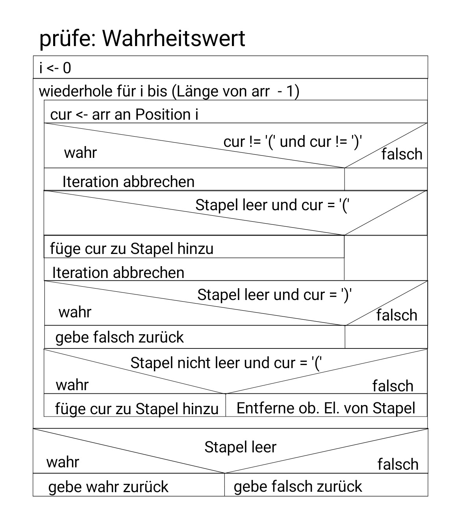
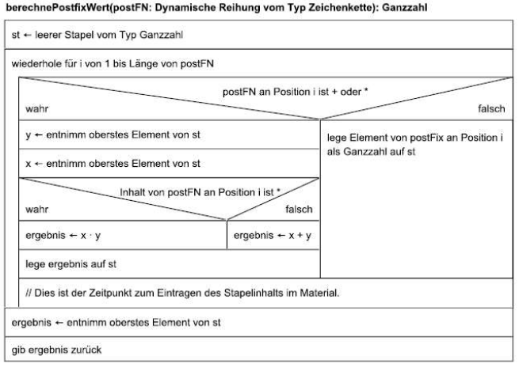
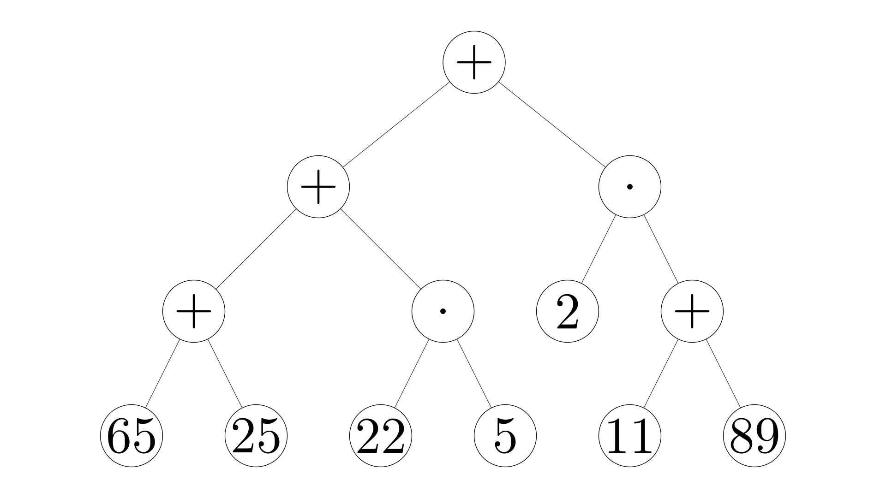

Abituraufgabe 5: Termbäume
Pascal, Chris
• 7. März 2022
Abituraufgabe 5
Termbäume

$$ (25+75) \cdot (75 \cdot 4 + 28 + 72) $$
$$ (16+44) \cdot (2+8) + 6 + 2 \cdot (11+89) $$
$$ (16+44) \cdot (2+8) + 6 + 2 \cdot (11+89) $$

Traversierung
Inorder Traversierung
Der Wert einer Wurzel ergibt sich immer aus den Teilwerten der Blätter. Die Klammern, die im Term solche Relationen deklarieren, sind somit überflüssig.
Lösung des Terms
Überprüfung der Klammern

Postfixnotation

Postfixnotation
postFN
7
13
+
30
+
13
37
+
10
25
$\cdot$
+
$\cdot$
st
7
13
20
30
50
13
37
50
10
25
250
300
15000
65 25 + 22 5 $\cdot$ + 2 11 89 + $\cdot$ +
65 25 + 22 5 $\cdot$ + 2 11 89 + $\cdot$ +

The End
[Insert Funny Meme Here]